Universal Functions
UniversalFunctions.jl provides universal functions for SurfaceFluxes.jl. The functions are defined in src/UniversalFunctions.jl and the plots are generated in docs/src/plot_universal_functions.jl.
Businger Universal Functions
Nishizawa (2018) Equation (A7)
\[\begin{equation} f_m = (1 - 15\zeta)^{\frac{1}{4}} \end{equation}\]
Nishizawa (2018) Equation (A8)
\[\begin{equation} f_h = (1 - 9\zeta)^{\frac{1}{2}} \end{equation}\]
Nishizawa (2018) Equation (A1)
\[\begin{equation} \phi_{m}(\zeta)= \begin{cases} a\zeta + 1 & \text{for } L\geq0\\ (1 - 15\zeta)^{-\frac{1}{4}} & \text{for } L < 0 \end{cases} \end{equation}\]
Nishizawa (2018) Equation (A2)
\[\begin{equation} \phi_{h}(\zeta)= \begin{cases} \frac{a\zeta}{\Pr} + 1 & \text{for } L\geq0\\ (1 - 9\zeta)^{-\frac{1}{2}} & \text{for } L < 0 \end{cases} \end{equation}\]
Nishizawa (2018) Equation (A3)
\[\begin{equation} \psi_{m}(\zeta)= \begin{cases} -a\zeta & \text{for } L\geq0\\ \log\left[ \frac{(1 + f_{m})^2(1 + f_{m}^2)}{8} \right] - 2\tan^{-1}f_m + \frac{\pi}{2} & \text{for } L < 0 \end{cases} \end{equation}\]
Nishizawa (2018) Equation (A4)
\[\begin{equation} \psi_{h}(\zeta)= \begin{cases} -\frac{a\zeta}{\Pr} & \text{for } L\geq0\\ 2\log\left(\frac{1 + f_h}{2} \right)& \text{for } L < 0 \end{cases} \end{equation}\]
Nishizawa (2018) Equation (A13)
\[\begin{equation} \Psi_{m}(\zeta)= \begin{cases} -\frac{a\zeta}{2} & \text{for } L\geq0\\ -\frac{15\zeta}{8} & \text{for } L < 0 \end{cases} \end{equation}\]
Nishizawa (2018) Equation (A5)
\[\begin{equation} \Psi_{m}(\zeta)= \begin{cases} -\frac{a\zeta}{2} & \text{for } L\geq0\\ \log\left[ \frac{(1 + f_{m})^2(1 + f_{m}^2)}{8} \right] - 2\tan^{-1}f_m + \frac{1 - f_m^3}{12\zeta} + \frac{\pi}{2} - 1 & \text{for } L < 0 \end{cases} \end{equation}\]
Nishizawa (2018) Equation (A14)
\[\begin{equation} \Psi_{h}(\zeta)= \begin{cases} -\frac{a\zeta}{2\Pr} & \text{for } L\geq0\\ -\frac{9\zeta}{4} & \text{for } L < 0 \end{cases} \end{equation}\]
Nishizawa (2018) Equation (A6)
\[\begin{equation} \Psi_{h}(\zeta)= \begin{cases} -\frac{a\zeta}{2\Pr} & \text{for } L\geq0\\ 2\log\left(\frac{1 + f_h}{2} \right) + \frac{2(1-f_h)}{9\zeta} - 1& \text{for } L < 0 \end{cases} \end{equation}\]
Gryanik Universal Functions
Gryanik (2020) Equation (32)
\[\begin{equation} \phi_{m}(\zeta) = 1 + \frac{a_m\zeta}{(1 + b_m\zeta)^\frac{2}{3}} \end{equation}\]
Nishizawa (2018) Equation (A1)
\[\begin{equation} \phi_{m}(\zeta)= \begin{cases} a\zeta + 1 & \text{for } L\geq0\\ (1 - 15\zeta)^{-\frac{1}{4}} & \text{for } L < 0 \end{cases} \end{equation}\]
Gryanik (2020) Equation (33)
\[\begin{equation} \phi_{h}(\zeta) = Pr_{0}\left(1 + \frac{a_h\zeta}{1 + b_h\zeta}\right) \end{equation}\]
Nishizawa (2018) Equation (A2)
\[\begin{equation} \phi_{h}(\zeta)= \begin{cases} \frac{a\zeta}{\Pr} + 1 & \text{for } L\geq0\\ (1 - 9\zeta)^{-\frac{1}{2}} & \text{for } L < 0 \end{cases} \end{equation}\]
Gryanik (2020) Equation (34)
\[\begin{equation} \psi_{m}(\zeta) = -3\frac{a_m}{b_m}\left[(1+b_m)^\frac{1}{3} - 1 \right] \end{equation}\]
Nishizawa (2018) Equation (A3)
\[\begin{equation} \psi_{m}(\zeta)= \begin{cases} -a\zeta & \text{for } L\geq0\\ \log\left[ \frac{(1 + f_{m})^2(1 + f_{m}^2)}{8} \right] - 2\tan^{-1}f_m + \frac{\pi}{2} & \text{for } L < 0 \end{cases} \end{equation}\]
Gryanik (2020) Equation (35)
\[\begin{equation} \psi_{h}(\zeta) = -Pr_{0}\frac{a_h}{b_h}\ln\left(1 + b_h\zeta\right) \end{equation}\]
Nishizawa (2018) Equation (A4)
\[\begin{equation} \psi_{h}(\zeta)= \begin{cases} -\frac{a\zeta}{\Pr} & \text{for } L\geq0\\ 2\log\left(\frac{1 + f_h}{2} \right)& \text{for } L < 0 \end{cases} \end{equation}\]
Nishizawa (2018) Equation (A13)
\[\begin{equation} \Psi_{m}(\zeta)= \begin{cases} -\frac{a\zeta}{2} & \text{for } L\geq0\\ -\frac{15\zeta}{8} & \text{for } L < 0 \end{cases} \end{equation}\]
Nishizawa (2018) Equation (A5)
\[\begin{equation} \Psi_{m}(\zeta)= \begin{cases} -\frac{a\zeta}{2} & \text{for } L\geq0\\ \log\left[ \frac{(1 + f_{m})^2(1 + f_{m}^2)}{8} \right] - 2\tan^{-1}f_m + \frac{1 - f_m^3}{12\zeta} + \frac{\pi}{2} - 1 & \text{for } L < 0 \end{cases} \end{equation}\]
Nishizawa (2018) Equation (A14)
\[\begin{equation} \Psi_{h}(\zeta)= \begin{cases} -\frac{a\zeta}{2\Pr} & \text{for } L\geq0\\ -\frac{9\zeta}{4} & \text{for } L < 0 \end{cases} \end{equation}\]
Nishizawa (2018) Equation (A6)
\[\begin{equation} \Psi_{h}(\zeta)= \begin{cases} -\frac{a\zeta}{2\Pr} & \text{for } L\geq0\\ 2\log\left(\frac{1 + f_h}{2} \right) + \frac{2(1-f_h)}{9\zeta} - 1& \text{for } L < 0 \end{cases} \end{equation}\]
Grachev Universal Functions
Grachev (2007) Equation (9a)
\[\begin{equation} \phi_{m}(\zeta) = 1 + \frac{a_m\zeta(1 + \zeta)^{\frac{1}{3}}}{1 + b_m\zeta} \end{equation}\]
Nishizawa (2018) Equation (A1)
\[\begin{equation} \phi_{m}(\zeta)= \begin{cases} a\zeta + 1 & \text{for } L\geq0\\ (1 - 15\zeta)^{-\frac{1}{4}} & \text{for } L < 0 \end{cases} \end{equation}\]
Grachev (2007) Equation (9b)
\[\begin{equation} \phi_{h}(\zeta) = 1 + \frac{a_h\zeta + b_h\zeta^2}{1 + c_h\zeta + \zeta^2} \end{equation}\]
Nishizawa (2018) Equation (A2)
\[\begin{equation} \phi_{h}(\zeta)= \begin{cases} \frac{a\zeta}{\Pr} + 1 & \text{for } L\geq0\\ (1 - 9\zeta)^{-\frac{1}{2}} & \text{for } L < 0 \end{cases} \end{equation}\]
Grachev (2007) Equation 12
\[\begin{equation} \begin{split} \psi_{m}(\zeta) = -\frac{3a_m}{b_m}(\zeta - 1) + \frac{a_mb_m}{2b_m}\left[2\ln\left(\frac{\zeta + b_m}{1 + b_m}\right) - \ln\left(\frac{\zeta^2 - \zeta b_m + b_m^2}{1 - b_m + b_m^2}\right) + \\ 2\sqrt{3}\left(\arctan\left(\frac{2\zeta - b_m}{\sqrt{3}b_m}\right) - \arctan\left(\frac{2-b_m}{\sqrt{3}b_m} \right)\right) \right] \end{split} \end{equation}\]
Nishizawa (2018) Equation (A3)
\[\begin{equation} \psi_{m}(\zeta)= \begin{cases} -a\zeta & \text{for } L\geq0\\ \log\left[ \frac{(1 + f_{m})^2(1 + f_{m}^2)}{8} \right] - 2\tan^{-1}f_m + \frac{\pi}{2} & \text{for } L < 0 \end{cases} \end{equation}\]
Grachev (2007) Eq. 13
\[\begin{equation} \psi_{h}(\zeta)= -\frac{b_h}{2}\ln\left(1 + c_h\zeta + \zeta^2\right) + \left(-\frac{a_h}{b_h} + \frac{b_hc_h}{2b_h}\right)\left[\ln\left(\frac{2\zeta + c_h - b_h}{2\zeta + c_h +b_h}\right) - \ln\left(\frac{c_h - b_h}{c_h + b_h}\right)\right] \end{equation}\]
Nishizawa (2018) Equation (A4)
\[\begin{equation} \psi_{h}(\zeta)= \begin{cases} -\frac{a\zeta}{\Pr} & \text{for } L\geq0\\ 2\log\left(\frac{1 + f_h}{2} \right)& \text{for } L < 0 \end{cases} \end{equation}\]
Plots
Here, we reproduce some plots from literature, specifically from Gryanik et al. 2020, Businger 1971, and Bonan 2019. Note that Bonan uses the forms of $\phi$ and $\psi$ from Dyer and Hicks 1970; Dyer 1974; Brutsaert 1982, pp. 68–71; Garratt 1992, pp. 52–54.
include("plot_universal_functions.jl")"/home/runner/work/SurfaceFluxes.jl/SurfaceFluxes.jl/docs/build/Bonan_psi_h.svg"Figs 1,2 (Gryanik)
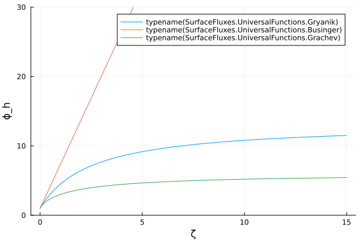 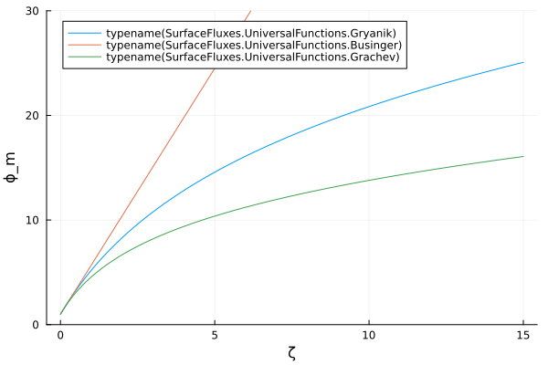 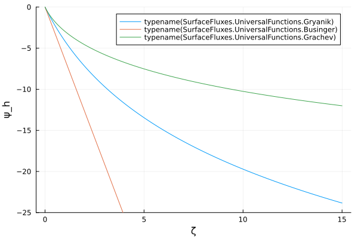 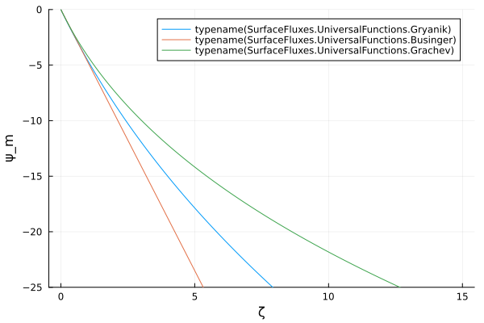
Fig 3 (Gryanik)
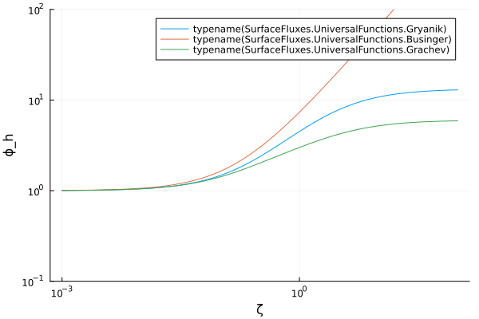 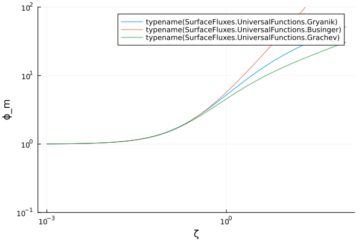
Figs 1,2 (Businger)
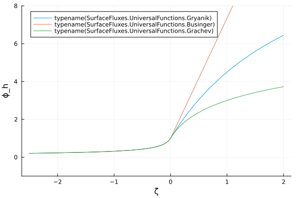 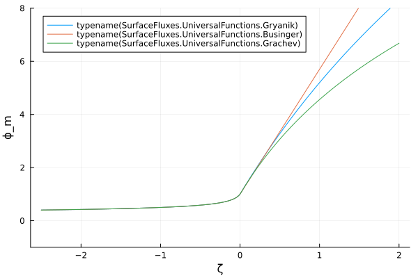
Figs 1,2 (Bonan)
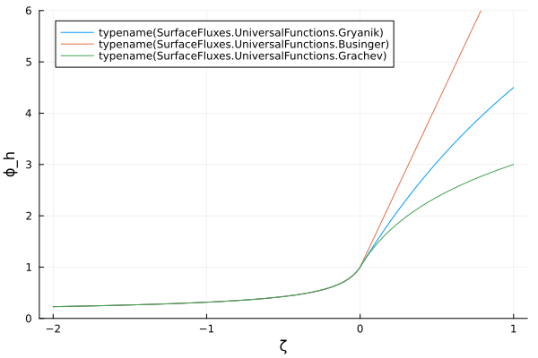 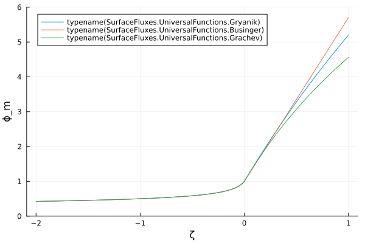 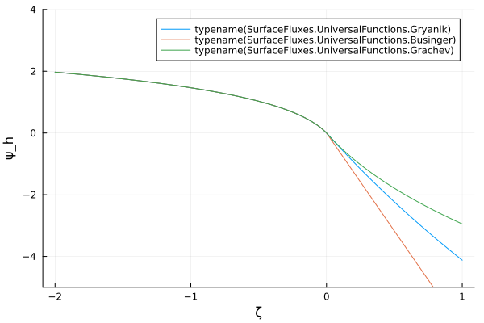 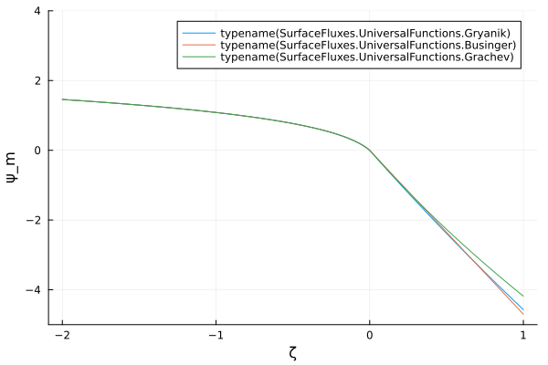